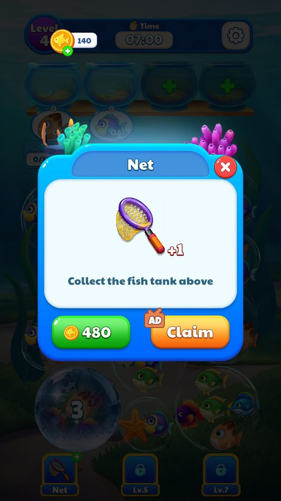

Đa ngôn ngữ
Game hỗ trợ 14 ngôn ngữ trong một bảng phẳng 698 khoá.
Mô tả
- Game hỗ trợ 14 ngôn ngữ trong một bảng phẳng 698 khoá.
- Điểm khác biệt so với đa số dự án Unity là không dùng I2 Localization mà tự cài đặt: khoá tra cứu chính là chuỗi tiếng Trung giản thể, nên mọi config khác tham chiếu tới bản dịch bằng đúng tên tiếng Trung, ví dụ ItemConfig ghi 生命值 và tra ra Lives, ライフ, 하트, Nyawa.
- Có ba component chuyên biệt để localize văn bản, ảnh và font, cho thấy một số ngôn ngữ cần đổi cả hình và bộ chữ.
- Chọn ngôn ngữ theo máy lần đầu: Giao diện hiện đúng ngôn ngữ máy
- Tra một chuỗi: Hiển thị Net trong bản tiếng Anh
- Đổi ảnh và font theo ngôn ngữ: Ảnh và font khớp ngôn ngữ
Lưu ý
Ảnh chụp màn hình (1)
Chụp trực tiếp từ game đang chạy: 2026-10-06 · LDPlayer 9 · Android 9 · 1080×1920 · máy ảo PHM110 · v1.4111 (cài từ Google Play ngày 12/09/2026) · tài khoản test JadeGill, đang ở level 4. Bấm ảnh để phóng to, dùng phím ← → để chuyển ảnh.


Mở khóa & điểm vào
Luôn hoạt động, ngôn ngữ chọn theo máy và lưu trong PlayerPrefs.
Điểm vào:
- Tự nhận theo ngôn ngữ hệ thống lúc cài
- Mục đổi ngôn ngữ trong UIPanelSetting
Cách hoạt động
- LocalizationConfig.json là mảng 698 đối tượng, mỗi đối tượng có cột Key cùng 14 cột ngôn ngữ: Chinese, English, Japanese, Korean, Traditional, German, French, Russian, Spanish, Portuguese, Thai, Indonesian, Malay.
- Cột Key trùng nội dung cột Chinese.
- LocalizationManager nạp bảng lúc khởi động và chọn cột theo khoá ELocalizationType trong PlayerPrefs, tài khoản khảo sát đang ở giá trị 1.
- SDKManager.GetSystemLanguage trả về mã ngôn ngữ hệ thống, đo được là 23.
- Tham số server UIFont chọn bộ font.
Luồng chi tiết theo code
LocalizationConfig.json là mảng 698 đối tượng, mỗi đối tượng có cột Key cùng 14 cột ngôn ngữ: Chinese, English, Japanese, Korean, Traditional, German, French, Russian, Spanish, Portuguese, Thai, Indonesian, Malay. Cột Key trùng nội dung cột Chinese. LocalizationManager nạp bảng lúc khởi động và chọn cột theo khoá ELocalizationType trong PlayerPrefs, tài khoản khảo sát đang ở giá trị 1. SDKManager.GetSystemLanguage trả về mã ngôn ngữ hệ thống, đo được là 23. Tham số server UIFont chọn bộ font.
Số liệu chính
| Chỉ số | Giá trị | Nguồn |
|---|---|---|
| LocalizationConfig | Chinese, English, Japanese, Korean, Traditional, German, French, Russian, Spanish, Portuguese, Thai, Indonesian, Malay, cộng cột Key | AssetRes/Configs/Default/LocalizationConfig.json, 374 KB |
| ELocalizationType | 1 | PlayerPrefs |
| UIFont | 1 | SDKManager.getOnlineConfigParams |
| SdkLanguageConfig.txt | bảng ngôn ngữ của SDK | Resources/SdkLanguageConfig.txt |
Use case (3)
Bấm vào từng use case để mở. Mở/đóng tất cả
UC-01 Chọn ngôn ngữ theo máy lần đầu
Các bước- Gọi SDKManager.GetSystemLanguage
- Ánh xạ sang chỉ số cột
- Ghi ELocalizationType
| Actor | System |
|---|---|
| Trigger | Khởi động lần đầu |
| Điều kiện | Chưa có ELocalizationType |
| Kết quả | Giao diện hiện đúng ngôn ngữ máy |
| Evidence | SDKManager.GetSystemLanguage trả về 23; PlayerPrefs ELocalizationType |
UC-02 Tra một chuỗi
Các bước- Lấy khoá tiếng Trung từ config, ví dụ 捕鱼网
- Tra dòng tương ứng
- Lấy giá trị ở cột ngôn ngữ đang chọn
| Actor | System |
|---|---|
| Trigger | Dựng giao diện |
| Điều kiện | Bảng đã nạp |
| Kết quả | Hiển thị Net trong bản tiếng Anh |
| Quy tắc / số liệu | Khoá là chuỗi tiếng Trung chứ không phải mã định danh, nên đổi tên hiển thị tiếng Trung sẽ làm hỏng tra cứu |
| Evidence | LocalizationConfig.json; ItemConfig.ItemName_Localization |
UC-03 Đổi ảnh và font theo ngôn ngữ
Các bước- LocalizationImage chọn sprite theo ngôn ngữ
- LocalizationFont chọn bộ chữ
| Actor | System |
|---|---|
| Trigger | Dựng giao diện có chữ trong ảnh |
| Điều kiện | Có biến thể theo ngôn ngữ |
| Kết quả | Ảnh và font khớp ngôn ngữ |
| Quy tắc / số liệu | Bundle có các biến thể spine kiểu combo_en_1 và combo_fr_1, xác nhận nội dung đồ hoạ theo ngôn ngữ |
| Evidence | LocalizationImage; LocalizationFont; AssetRes/UITexture/spine_/spine_combo_ |
Cấu hình (4)
Gộp mọi nguồn: const trong code, JSON mặc định trong Resources, bảng static, storage key, AB test, cờ server.
| Nguồn | Key | Kiểu | Giá trị | Ý nghĩa | Nơi định nghĩa |
|---|---|---|---|---|---|
| json default | LocalizationConfig | bảng 698 dòng x 14 ngôn ngữ | Chinese, English, Japanese, Korean, Traditional, German, French, Russian, Spanish, Portuguese, Thai, Indonesian, Malay, cộng cột Key | Toàn bộ văn bản giao diện | AssetRes/Configs/Default/LocalizationConfig.json, 374 KB |
| storage key | ELocalizationType | int | 1 | Cột ngôn ngữ đang dùng | PlayerPrefs |
| server info | UIFont | int | 1 | Chọn bộ font giao diện | SDKManager.getOnlineConfigParams |
| asset | SdkLanguageConfig.txt | text | bảng ngôn ngữ của SDK | Ánh xạ ngôn ngữ phía SDK | Resources/SdkLanguageConfig.txt |
Bảng config gốc trong APK
LocalizationConfig.json – 40 khoá đầu
Khoá tra cứu là chuỗi tiếng Trung. Bảng đủ 698 khoá ở trang phụ lục Text UI. AssetRes/Configs/Default/LocalizationConfig.json · 40/698 dòng.
| Key | English | Japanese | Korean | German | Thai |
|---|---|---|---|---|---|
| 生命值 | Lives | ライフ | 하트 | Leben | HP |
| 刷新 | Refresh | リフレッシュ | 새로고침 | Erneuern | รีเฟรช |
| 复活 | Revive | 復活 | 부활 | Wiederbeleben | ฟื้นคืนชีพ |
| 复活并加时<color=red>({0}s)</color> | Revive and +<color=red>{0}s</color> | 復活して時間追加<color=red>({0}秒)</color> | 부활 및 시간 연장<color=red>({0}s)</color> | Wiederbeleben + Zeit <color=red>({0}s)</color> | ฟื้นคืนชีพและเพิ่มเวลา <color=red>({0}s)</color> |
| 复活并清空暂存区 | Revive & Clear Slot | 復活してストックをクリア | 부활 및 임시 보관함 비우기 | Wiederbeleben & Ablage leeren | ฟื้นฟูและเคลียร์พื้นที่รอ |
| 快来帮帮缺氧的鱼儿们吧 | Help the oxygen-deficient fish! | 酸欠の魚たちを助けよう！ | 산소가 부족한 물고기들을 도와주세요! | Hilf den Fischen! Sie brauchen Luft! | มาช่วยปลาที่กำลังขาดออกซิเจนกันเถอะ! |
| 收集上方一个鱼缸 | Collect the fish tank above | 上の水槽を1つ集めよう | 상단 어항 1개 수집 | Sammle ein Aquarium von oben | รวบรวมตู้ปลาด้านบน |
| 放不下了 | Almost there! | ストック満杯 | 공간이 가득 찼습니다 | Kein Platz mehr | ไม่มีช่องว่างแล้ว |
| 敲碎一个泡泡 | Smash a bubble | バブルを1つ壊す | 방울 1개 터트리기 | Zerplatze eine Blase | เป่าฟองให้แตก |
| 新玩法解锁 | New Blocker Unlocked | 新機能開放 | 신규 모드 잠금 해제 | Neues Feature freigeschaltet | ปลดล็อกโหมดใหม่ |
| 时间到了 | Time's up | 時間切れ | 시간 초과 | Zeit um! | หมดเวลาแล้ว |
| 泡泡掉落到底部就可以看清里面的鱼了 | When the bubble falls to the bottom, you can see clearly the fish inside. | バブルが底に落ちると、中の魚が見えるよ | 방울이 바닥에 떨어지면 안의 물고기를 볼 수 있습니다 | Lass die Blase fallen, um den Fisch zu sehen | เมื่อฟองลงไปถึงก้นอ่าง จะมองเห็นปลาที่อยู่ข้างในได้ |
| 泡泡里面的鱼刷新 | Fish refresh | バブルの中の魚をリフレッシュ | 방울 속 물고기 새로고침 | Die Fische in der Blase werden erneuert | ปลาที่อยู่ภายในฟองรีเฟรช |
| 消除带有钥匙的泡泡,即可解开铁链锁住的泡泡 | Eliminate the bubble with a key to unlock the bubble locked by a chain. | 鍵付きバブルを消して、チェーンロックを解除しよう | 열쇠가 있는 방울을 터트리면, 사슬에 묶인 방울을 풀 수 있습니다 | Entferne Schlüssel-Blasen, um die Ketten zu lösen | เคลียร์ฟองที่มีกุญแจสำหรับปลดล็อกโซ่ |
| 清空 | Clear | クリア | 비우기 | Leeren | เคลียร์หมด |
| 清空临时位置鱼 | Clear the fish from the holding area. | ストックの魚をクリア | 임시 보관함 물고기 비우기 | Ablage leeren | เคลียร์ปลาชั่วคราว |
| 点击相邻的小鱼三次,使冰块解冻 | Click on the adjacent fish three times to defrost the ice block. | 隣の魚を3回タップして、氷を溶かそう | 인접한 물고기를 3번 탭하여 얼음을 녹이세요 | Tippe dreimal auf einen Nachbarfisch, um das Eis aufzutauen | คลิกที่ปลาตัวข้างๆ สามครั้งเพื่อละลายน้ำแข็ง |
| 第{0}关 | Level {0} | レベル{0} | 스테이지 {0} | Level {0} | เลเวล {0} |
| 第{0}天 | Day {0} | {0}日目 | {0}일 차 | Tag {0} | วันที่ {0} |
| 签到 | login | ログイン | 출석 체크 | Login | เช็คอิน |
| 返回主页 | Home | ホームへ | 메인으로 돌아가기 | Startseite | กลับที่หน้าหลัก |
| 重新挑战 | Retry | リトライ | 다시 도전하기 | Erneut versuchen | ท้าทายใหม่ |
| 金币 | Coins | コイン | 코인 | Münzen | ทอง |
| 锤子 | Hammer | ハンマー | 망치 | Hammer | ค้อน |
| 领取 | Claim | 受け取る | 받기 | Abholen | รับ |
| 鱼票 | Fish Ticket | 魚チケット | 물고기 티켓 | Fischticket | ตั๋วปลา |
| 鱼票不足 | Not Enough Fish Tickets | 魚チケットが不足しています | 물고기 티켓 부족 | Nicht genug Fischtickets | ตั๋วปลาไม่เพียงพอ |
| 主页 | Home | ホーム | 메인 홈 | Startseite | หน้าหลัก |
| 继续 | Continue | 続ける | 계속 | Weiter | ดำเนินต่อ |
| 捕鱼网 | Net | 魚捕り網 | 뜰채 | Fischernetz | อวนจับปลา |
| 设置 | Settings | 設定 | 설정 | Einstellungen | ตั้งค่า |
| 不符合目标的鱼会自动进入暂存区 | Fish that don't match the target will go to the holding area. | ターゲット以外の魚は、自動的にストックへ移動します | 목표와 다른 물고기는 임시 보관함으로 자동 이동합니다 | Falsche Fische kommen in die Ablage | ปลาที่ไม่ใช่เป้าหมายจะเข้าสู่พื้นที่รอโดยอัตโนมัติ |
| 只剩一个位置了！ | Only one slot left! | 残り1枠！ | 빈자리가 하나밖에 안 남았어요! | Nur noch ein Platz frei! | เหลือเพียงที่เดียวเท่านั้น! |
| 它会自动进入目标鱼缸 | It will go to the target tank automatically. | 自動でターゲットの水槽に入ります | 목표 어항으로 자동 이동합니다 | Es wird automatisch in das Zielaquarium eingeführt. | มันจะเข้าไปในตู้ปลาเป้าหมายโดยอัตโนมัติ |
| 收集3条就可以完成收集啦 | Get three fish to finish it! | あと3匹でクリア！ | 3마리를 모으면 수집이 완료됩니다! | Sammle 3 für die komplette Sammlung! | สะสมให้ครบ 3 ชิ้นก็เสร็จแล้ว! |
| 暂存区只剩下1个位置啦 | Only 1 slot left in the holding area! | ストックは残り1枠です！ | 임시 보관함의 빈자리가 1개뿐입니다! | Nur noch 1 Platz in der Ablage | เหลือพื้นที่รอเพียง 1 ช่องเท่านั้น |
| 暂存区满就会通关失败哦！ | If the holding area fills up, you'll fail the level! | ストックが満杯になると、ゲームオーバーだよ！ | 임시 보관함이 꽉 차면 스테이지 실패입니다! | Ist die Ablage voll, ist das Level verloren! | หากพื้นที่รอเต็มจะถือว่าเวเวลล้มเหลวนะ! |
| 来完成一个泡泡的消除吧 | Match to pop the bubble. | バブルを1つ消してみよう | 방울 1개를 터트려 보세요 | Lass eine Blase platzen! | มาเคลียร์ฟองอันหนึ่งกันเถอะ |
| 泡泡被消除后，上方的泡泡会掉落哦，并展示更多的鱼 | When bubbles pop, new one will fall down with more fish! | バブルを消すと、上のバブルが落ちてきて、他の魚も見えるようになるよ | 방울을 터트리면 위의 방울이 떨어지며 더 많은 물고기가 나타납니다 | Wenn Blasen platzen, fallen die oberen nach und legen mehr Fische frei | เมื่อฟองถูกเคลียร์ไป ฟองด้านบนก็จะตกลงมา เผยให้เห็นปลาตัวอื่นๆ |
| 点击一条鱼 | Tap a fish. | 魚を1匹タップ | 물고기 탭하기 | Tippe auf einen Fisch | คลิกที่ปลาหนึ่ง |
Tham số server (live)
Tham số online của SDK ZMYSDK (SDKManager.getOnlineConfigParams). Giá trị live đọc từ logcat ngày 12/09/2026; ô tô vàng là chỗ server ghi đè mặc định của client. Bảng đủ 17 khoá ở phụ lục sự kiện và facts/runtime/server-config.md.
| Khoá | Mặc định client | Live (server) | Property C# | Ý nghĩa |
|---|---|---|---|---|
UIFont | 1 | 1 | UIFont | Chọn bộ font giao diện |
Giao diện (UI)
| Element | Class | Mục đích |
|---|---|---|
| Văn bản | LocalizationText | Gắn khoá dịch vào TextMeshPro |
| Ảnh | LocalizationImage | Đổi sprite theo ngôn ngữ |
| Font | LocalizationFont | Đổi bộ chữ |
Storage keys
ELocalizationType
Chưa đọc được / ghi chú
- NickNameConfig chỉ có 5 nhóm ngôn ngữ trong khi giao diện hỗ trợ 14, nên người chơi ở 9 ngôn ngữ còn lại nhận tên thuộc một trong 5 nhóm đó
- Ánh xạ giữa mã trả về của GetSystemLanguage và chỉ số cột chưa đọc được
Tính năng liên quan
Nguồn đã đọc
- AssetRes/Configs/Default/LocalizationConfig.json
- features/LocalizationManager.md
- facts/runtime/decoded/playerprefs.json